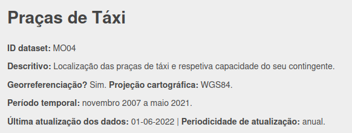

5 Dados Abertos em transportes
A União Europeia define Dados Abertos como:
Os dados abertos (da administração) são as informações que os organismos públicos recolhem, produzem ou compram (também chamadas informações do setor público) e disponibilizam a título gratuito tendo em vista a sua reutilização para qualquer fim. A licença estabelece as condições de utilização. Os princípios que regem os dados abertos são descritos pormenorizadamente na Definição de Conhecimento Aberto.
As vantagens dos dados abertos são múltiplas e podem ir dos ganhos de eficiência das administrações públicas ao crescimento económico do setor privado passando pelo bem-estar-social em sentido lato.
Outras vantagens e benefícios da partilha de dados são:
- Transparência e responsabilização, escrutínio democrático;
- Instituições mais eficientes e eficazes, procura e acesso a dados mais facilitadas, interoperabilidade de sistemas;
- Maior credibilidade das decisões
- Políticas públicas mais informadas, esclarecidas e sustentadas;
- Respostas mais rápidas e adequadas a contextos de crise;
- Desenvolvimento económico.
A União Europeia estima que o valor económico da partilha e utilização de dados abertos chegue a 194 mil milhões € em 2030.
Neste capítulo, vamos guiá-lo através das fontes de dados abertos para a análise dos transportes: redes rodoviárias e informações sobre os transportes públicos.
5.1 Pontos de Acesso Nacionais (NAP)
5.1.1 União Europeia
A diretiva ITS da Comissão Europeia (2010/40/EU) recomenda aos Estados-Membros que forneçam acesso a dados sobre transportes, de acordo com os stardards definidos pela CE. Os dados incluem não só dados sobre transportes públicos, mas também redes rodoviárias, parques de estacionamento e outras informações relacionadas com transportes.
List of the European Union members states with National Access Points for Transportation data
Exemplo dos dados de serviços de autocarro na Bélgica:

5.1.2 Portugal
NAP
Em Portugal, o NAP encontra-se em https://nap-portugal.imt-ip.pt
Encontrar os dados dos parques de estacionamento municipais do Porto.
Encontrar e descarregar os dados GTFS da Carris Metropolitana
Portal de dados abertos
O portal dados.gov.pt é a plataforma oficial nacional de partilha de dados institucionais.
Alguns websites de dados abertos de municípios também incluem dados de mobilidade e transportes, como é o caso de:
- Dados Abertos da Câmara Municipal de Lisboa
- Dados Abertos da Câmara Municipal de Cascais
- Dados Abertos da Câmara Municipal de Oeiras
- Dados Abertos da Câmara Municipal do Porto
Cada vez mais, os dados de transporte disponibilizados estão georreferenciados - i.e., é possível serem visualizados num mapa.
Algumas instituições permitem o download dos dados, e outros apenas a visualização dos mesmos em mapas ou dashboards interativas.
As boas práticas recomendam que os dados venham acompanhados de metadados, que incluem toda a informação relevante sobre os dados (ex: explicação dos acrónimos de variáveis usadas).
Outras informações que acompanham os dados abertos são:
- Descrição
- Formato
- Período temporal
- Versão
- Data da última atualização
- Responsável pela manutenção dos dados e contacto

Dados de operação (passageiros, bilhética, volumes de tráfego, entre outros) normalmente não são disponibilizados ao público.
Por vezes, alguma dessa informação é incluída, de forma agregada, nos relatórios anuais de sustentabilidade das operadoras.
Enumere motivos para este tipo de dados não ser, normalmente, de acesso aberto.
5.2 Boas práticas de dados abertos
O Open Data Institute publica vários guias de boas práticas de partilha e uso de dados abertos, tais como validação de veracidade dos dados, anonimização de dados, avaliação dos riscos de partilha de dados, ética e responsabilidade, estimativa do valor dos dados partilhados, entre outros.
Os dados abertos são publicados sob licenças específicas, não incluem dados pessoais, informação sensível e/ou confidencial.
Algumas questões devem ser consideradas ao usar um conjunto de dados abertos (The Open Data Institute 2013):
Formato
- Como foram processados os dados?
- Estão em estado bruto (raw) ou foram processados?
- De que modo o seu formato (e granularidade) irá afetar a sua análise/produto/aplicação?
- Que transformações sintáticas (linguagem) e semânticas (significado) serão necessárias?
- Estes dados são compatíveis com outros conjuntos de dados de que dispõe?
Qualidade
- Até que ponto os dados são atuais?
- Com que frequência são atualizados?
- Compreende todos os campos e o seu contexto?
- Durante quanto tempo serão publicados? Qual é o compromisso com o publicador?
- O que sabe sobre a exatidão dos dados?
- Como são tratados os dados omissos?
Alguns dados abertos fornecem um API (Application Programming Interface) para que se possa automativamente chamar os dados mais autualizados disponíveis.
5.2.1 Tutoriais
O ISCTE, no âmbito do Plano Nacional de Administração Aberta, criou um conjunto de vídeos tutoriais sobre algumas possibilidades da reutilização de dados, utilizando o R.
A AMA - Agência para a Modernização Administrativa disponibiliza também alguns vídeos sobre como usar o portal de dados abertos. Chamo a atenção para o “Como publicar dados abertos”, acessível a qualquer entidade.
5.2.2 Reutilização de dados abertos
Qualquer pessoa ou entidade pode aceder a dados abertos (por definição). É recomendado, como boa prática, a partilha dos resultados que se obtiveram com a utilização de um conjunto de dados abertos. Tal permite inspirar outros utilizadores dos dados, bem como dar conhecimento à entidade que os partilhou trabalhos que podem ser realizados com esses dados - levando muitas vezes à descoberta de novas prespetivas sobre os dados.
As reutilizações documentadas muitas vezes também partilham o código utilizado para tratamento e análise do conjunto de dados, permitindo a sua replicabilidade e adaptação / aplicação a outros contextos.
Exemplos de trabalhos realizados por reutilização de dados abertos:
Dados.gov.pt
LxDataLab
5.3 Exemplos internacionais
5.3.1 STATS19
O Departamento de Transportes do Reino Unido (DfT) mantém uma importante base de dados com acidentes e colisões rodoviárias para todo o território - o STATS19, contendo dados uniformizados desde 1926 (centenas de milhares), que têm vindo a ser registados pela Polícia.
Esta base de dados abertos é amplamente usada para definição de políticas públicas de segurança rodviária, e na academia, com a elaboração de vários dashbors e estudos que utilizam os dados. Exemplo:
Bikedata - Compilação de vários dados de mobilidade urbana, incluindo colisões por tipo, contagens de tráfego. Os dados podem ser filtrados e exportados.
stats19 - Pacote R com todos os dados pré-tratados.
5.3.2 Táxis em Nova Iorque
A comissão de Táxis de Nova York (Taxi & Limousine Commission) partilha todos os dados de viagens realizadas desde 2009.
Os dados incluem localização de origem e destino, data e hora, distância de viagem, tarifa, tipo de pagamento, e número de passegeiros transportados.
Todos os anos, são realizadas várias análises a este conjunto de dados por alunos, investigadores, programadores, etc, que permitem uma análise detalhada e visualização espacial de padrões de mobilidade de táxis.
Exemplo 1 | Exemplo 2 | Exemplo 3 | Examplo 4 | Exemplo 5
Que vantagens vê na utilização de dados abertos?
Que dados a sua instituição poderia partilhar em acesso aberto?
Que vantagens vê na abertura de dados para a sua instituição?